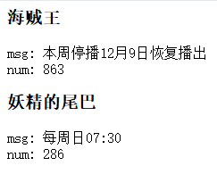

12月2日，晴，海贼王停更。
做为一个合格的肥宅，海贼王和妖精的尾巴是每周必追的。这两部动漫播放源都在爱奇艺，都是VIP内容。每周末看动漫，都要在YouTube或其它视频网站上找资源。问题在于，资源网站的更新往往不及时，因此常常需要Google“动漫名称 + 最新集数”，比如“海贼王 864”。
每个星期都精确的记住一部动漫应该更新的最新一集集数是多少，恐怕不是正常肥宅会做的事情，况且两部。这样，每次搜索资源前，都需要进入爱奇艺，搜索海贼王，看到最新的一集集数，关闭页面，进入Google搜索。妖精的尾巴也要同样的操作来一次。
而且，在爱奇艺里看到最新一集集数的瞬间，是无法判断它是否停更的，还需要在复杂的页面中找到“更新时间”这一标签，看更新状态是否正常，才可以做出判断。至于手机页面或APP，更是没有途径可以查看动漫的更新状态。
另一个获取最新集数信息的方式是，百度直接搜索动漫名称，首页就倒序显示最新几集的列表，但也无法判断是否更新正常。而且，浏览器默认为Google，百度搜索需要先输入baidu，按TAB切换至百度搜索引擎，再输入要搜索的内容，步骤同样繁琐。
写一段简单的Python脚本，让程序从爱奇艺页面上抓取信息，自己直接访问程序便能知晓动漫的更新情况。首先导包：
import urllib.request |
urllib用于发送http请求，并接收页面数据；bs4用于解析页面，更轻易获取内容；wsgiref用于建立http服务器，提供网络服务。
# 获取页面内容 |
这几行代码发送了请求，并从页面中获取信息。这里更新时间和最新一集集数的信息就已经拿到了。接着要创建一个http服务器，让程序输出内容到网络：
def application(environ, start_response): |
运行结果如图：

从这一想法出发，可以扩展程序。一种是从各大网站获取全面的动漫更新信息，主动提供服务；再一种是根据用户的输入，提供自定义的动漫更新信息；或者将两者结合，提供一种大而全的、可收藏、可定制的服务。虽然这种想法毫无意义。
之前的代码犯了一个低级错误，程序只会在首次运行时发起网络请求，之后由于网络服务一直处于启动状态，返回网页的内容始终都是初始数据。解决这个问题也很容易，将请求网络的操作封装到一个函数中，再到application函数中调用该函数即可。
↶ 返回首页